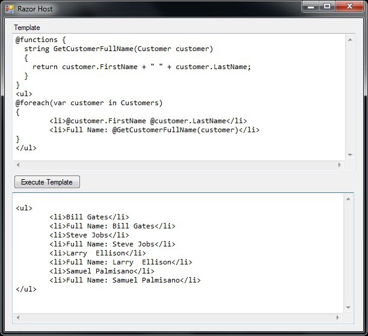

The new Razor View Engine that is part of ASP.NET MVC 3 can be hosted outside of any Web related stuff. In other words, the Razor Engine is not dependent on IIS and can be sued in a non-Web application such as a GUI or console app. This makes a whole lot of things possible, since you can use the Razor syntax in any kind of template and generate some text output. This output could be a mail-merged text document or a code file that in turn is compiled into your application. In this post, I'm simply going to provide you with a class that wraps the Razor Engine Host making it really simple for you to use in any kind of project, including a GUI project that is targeted to the Client profile of .Net 4.0. Your project will need to reference the System.Web.Razor assembly that's part of (currently) ASP.NET MVC 3 Beta.

Razor Engine Host Wrapper
Code listing 1 below, is the listing of the entire class. It has just one public method calledParseAndCompileTemplate that returns a compiled assembly that contains the newly generated class. RazorEngineHostWrapper.cs
using System; using System.CodeDom.Compiler; using System.IO; using System.Reflection; using System.Text; using System.Web.Razor; using Microsoft.CSharp; namespace RazorHost { /// <summary> /// This class is a wrapper around the Razor Engine and Razor Engine Host /// </summary> public class RazorEngineHostWrapper { private RazorTemplateEngine InitializeRazorEngine(Type baseClassType, string namespaceOfGeneratedClass, string generatedClassName) { RazorEngineHost host = new RazorEngineHost(new CSharpRazorCodeLanguage()); host.DefaultBaseClass = baseClassType.FullName; host.DefaultClassName = generatedClassName; host.DefaultNamespace = namespaceOfGeneratedClass; host.NamespaceImports.Add("System"); host.NamespaceImports.Add("System.Collections.Generic"); host.NamespaceImports.Add("System.Linq"); return new RazorTemplateEngine(host); } /// <summary> /// This method Parses and compiles the source code into an Assembly and returns it /// </summary> /// <param name="baseClassType">The Type of the Base class the generated class descends from</param> /// <param name="namespaceOfGeneratedClass">The Namespace of the generated class</param> /// <param name="generatedClassName">The Class Name of the generated class</param> /// <param name="ReferencedAssemblies">Assembly refereces that may be required in order to compile the generated class</param> /// <param name="sourceCodeReader">A Text reader that is a warpper around the "Template" that is to be parsed and compiled</param> /// <returns>An instance of a generated assembly that contains the generated class</returns> public Assembly ParseAndCompileTemplate(Type baseClassType, string namespaceOfGeneratedClass, string generatedClassName, string[] ReferencedAssemblies, TextReader sourceCodeReader) { RazorTemplateEngine engine = InitializeRazorEngine(baseClassType, namespaceOfGeneratedClass, generatedClassName); GeneratorResults razorResults = engine.GenerateCode(sourceCodeReader); CSharpCodeProvider codeProvider = new CSharpCodeProvider(); CodeGeneratorOptions options = new CodeGeneratorOptions(); string generatedCode = null; using (StringWriter writer = new StringWriter()) { codeProvider.GenerateCodeFromCompileUnit(razorResults.GeneratedCode, writer, options); generatedCode = writer.GetStringBuilder().ToString(); } var outputAssemblyName = Path.GetTempPath() + Guid.NewGuid().ToString("N") + ".dll"; CompilerParameters compilerParameters = new CompilerParameters(ReferencedAssemblies, outputAssemblyName); compilerParameters.ReferencedAssemblies.Add("System.dll"); compilerParameters.ReferencedAssemblies.Add("System.Core.dll"); compilerParameters.ReferencedAssemblies.Add(Assembly.GetExecutingAssembly().CodeBase.Substring(8)); compilerParameters.GenerateInMemory = false; CompilerResults compilerResults = codeProvider.CompileAssemblyFromDom(compilerParameters, razorResults.GeneratedCode); if (compilerResults.Errors.Count > 0) { var compileErrors = new StringBuilder(); foreach (System.CodeDom.Compiler.CompilerError compileError in compilerResults.Errors) compileErrors.Append(String.Format("Line: {0}\t Col: {1}\t Error: {2}\r\n", compileError.Line, compileError.Column, compileError.ErrorText)); throw new Exception(compileErrors.ToString() + generatedCode); } return compilerResults.CompiledAssembly; } } }
Code Listing 1: RazorEngineHostWrapper.cs
Using the Razor Engine Wrapper
Code Listing 2 shows you a sampling of how you would use the RazorEngineHost Wrapper. The classTemplateBase that you see referenced in Code listing 2 is sort of specific to this project but you'll need a similar class in your own projects. The base class of the class that is generated using the Razor Engine must have the following two methods with functional implementations (as shown in Code Listing 3):
public virtual void Write(object value)public virtual void WriteLiteral(object value)
Execute(). So your classes can descend from any class of your choosing so long it it meets the above requirements. The class that is generated then descends from that class.
Using the RazorEngineHostWrapper
private void button1_Click(object sender, EventArgs e) { TextReader sourceCodeReader = new StringReader(textBox1.Text); string[] referencesAssemblies = new String[] { @"System.dll", @"System.Core.dll" }; RazorEngineHostWrapper razorEngineHostWrapper = new RazorHost.RazorEngineHostWrapper(); var generatedAssembly = razorEngineHostWrapper.ParseAndCompileTemplate(typeof(TemplateBase), "RazorHost", "MyTemplate", referencesAssemblies, sourceCodeReader); Type type = generatedAssembly.GetType("RazorHost.MyTemplate"); var instance = (TemplateBase)Activator.CreateInstance(type); object result = type.InvokeMember("Execute", BindingFlags.InvokeMethod, null, instance, null); textBox2.Text = instance.Buffer.ToString(); }
TemplateBase.cs
public abstract class TemplateBase { public StringBuilder Buffer { get; private set; } private TextWriter writer; private TextWriter Writer { get { return writer; } } public List<Customer> Customers { get; set; } public TemplateBase() { Buffer = new StringBuilder(); writer = new StringWriter(Buffer); Customers = new List<Customer>() { new Customer() { FirstName="Bill", LastName="Gates" }, new Customer() { FirstName="Steve", LastName="Jobs" }, new Customer() { FirstName="Larry", LastName=" Ellison" }, new Customer() { FirstName="Samuel", LastName="Palmisano" } }; } public virtual void Write(object value) { Writer.Write(value); } public virtual void WriteLiteral(object value) { Writer.Write(value); } public abstract void Execute(); } public class Customer { public string FirstName { get; set; } public string LastName { get; set; } }
Code Listing 3: The TemplateBase class
A Sample Template
Code Listing 4 shows you a sample template that you can use. Note that the template itself is specific to the code in Code Listing 2 and Code Listing 3, in that the template referencesCustomers. The generated output is shown Code Listing 5.
Template using Razor Syntax
@functions {
string GetCustomerFullName(Customer customer)
{
return customer.FirstName + " " + customer.LastName;
}
}
<ul>
@foreach(var customer in Customers)
{
<li>@customer.FirstName @customer.LastName</li>
<li>Full Name: @GetCustomerFullName(customer)</li>
}
</ul>Code Listing 4: A Sample Template using the Razor Syntax
Generated Output
<ul> <li>Bill Gates</li> <li>Full Name: Bill Gates</li> <li>Steve Jobs</li> <li>Full Name: Steve Jobs</li> <li>Larry Ellison</li> <li>Full Name: Larry Ellison</li> <li>Samuel Palmisano</li> <li>Full Name: Samuel Palmisano</li> </ul>